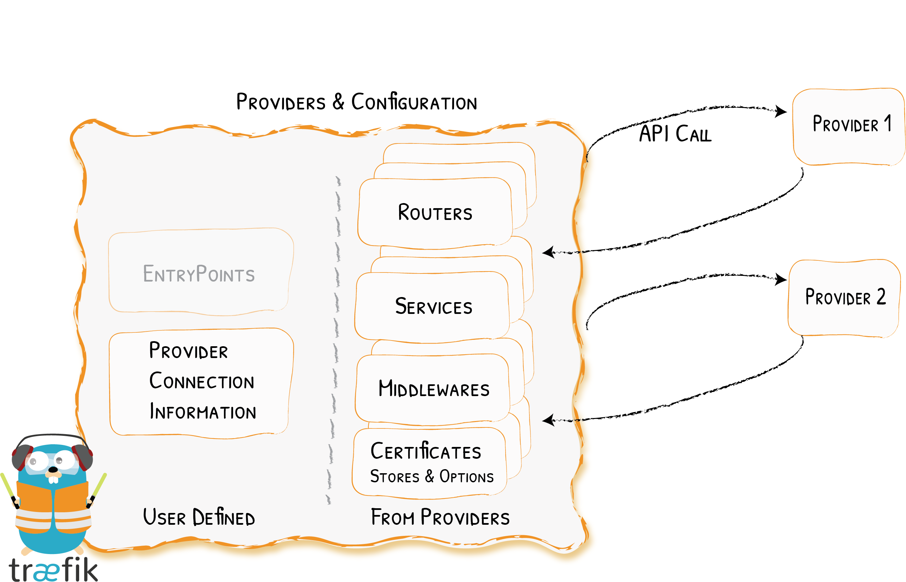

traefik-provider
 provider是traefik配置的动态更新,提供了很多种方式,如我们调试用的文件,k8s上的ingress,gateway,crd方式,consul等, 原理其实都差不多,本文我们举例k8s ingress providers的实现。 通过分析代码后,主要分为以下几个模块
- watcher：主逻辑,关联了所有的provider,以及通过如下3个函数实现配置的监听,通知,以及变更
- listener：配置变更的具体逻辑,调用各个模块创建的函数
- Provide：负责监听各种类型配置变更方法,本文将从ingress分析
watcher启动主逻辑
以下为watch启动的主逻辑,通过AddListener将config改变后需要执行的方法添加到数组里,省略了部分AddListener方法
//cmd/traefik/traefik.go
watcher := server.NewConfigurationWatcher(
routinesPool,
providerAggregator, //配置文件中的providers,判断开启了哪几种类型的provider
getDefaultsEntrypoints(staticConfiguration),
"internal",
)
// Server Transports
watcher.AddListener(func(conf dynamic.Configuration) {
roundTripperManager.Update(conf.HTTP.ServersTransports)
dialerManager.Update(conf.TCP.ServersTransports)
})
// Switch router
watcher.AddListener(switchRouter(routerFactory, serverEntryPointsTCP, serverEntryPointsUDP))
//pkg/server/server.go
//watch启动逻辑
s.watcher.Start()
//pkg/server/configurationwatcher.go
func (c *ConfigurationWatcher) Start() {
c.routinesPool.GoCtx(c.receiveConfigurations)
c.routinesPool.GoCtx(c.applyConfigurations)
c.startProviderAggregator()
}
其中,主要为以下3个函数处理watcher的完整逻辑
- c.receiveConfigurations: 接收provider发现的配置变更,通知c.applyConfigurations
- c.applyConfigurations：调用watcher.AddListener里配置的方法进行配置变更
- c.startProviderAggregator：根据配置文件中provider监听对应类型的config是否变更,变更将配置发送给c.receiveConfigurations
c.startProviderAggregator
我们以k8s,ingress举例，将k8s ingress/services/endpoint类型添加增删改事件,收到事件变更通知后去拉一份最新配置下来,对比上一份配置的hash
有变更的情况下发给函数的参数configurationChan,也就是c.allProvidersConfigs
//pkg/server/configurationwatcher.go
func (c *ConfigurationWatcher) startProviderAggregator() {
safe.Go(func() {
err := c.providerAggregator.Provide(c.allProvidersConfigs, c.routinesPool)
})
}
//pkg/provider/kubernetes/ingress/kubernetes.go
func (p *Provider) Provide(configurationChan chan<- dynamic.Message, pool *safe.Pool) error {
k8sClient, err := p.newK8sClient(ctxLog)
pool.GoCtx(func(ctxPool context.Context) {
operation := func() error {
//事件通知,内部逻辑为监听了ingress,services,endpoint增删改,有变更事件会发送到eventsChan
eventsChan, err := k8sClient.WatchAll(p.Namespaces, ctxPool.Done())
throttleDuration := time.Duration(p.ThrottleDuration)
throttledChan := throttleEvents(ctxLog, throttleDuration, pool, eventsChan)
if throttledChan != nil {
eventsChan = throttledChan
}
for {
select {
case <-ctxPool.Done():
return nil
//判断到有事件变更,将k8s对象转换成traefik conf
case event := <-eventsChan:
conf := p.loadConfigurationFromIngresses(ctxLog, k8sClient)
confHash, err := hashstructure.Hash(conf, nil)
switch {
//如果配置的hash跟之前配置一致则跳过
case p.lastConfiguration.Get() == confHash:
logger.Debug().Msgf("Skipping Kubernetes event kind %T", event)
default:
p.lastConfiguration.Set(confHash)
//将消息发送到configurationChan,也就是传进来的chan上
configurationChan <- dynamic.Message{
ProviderName: "kubernetes",
Configuration: conf,
}
}
time.Sleep(throttleDuration)
}
}
}
})
return nil
}
c.receiveConfigurations
provider将消息发送给c.allProvidersConfigs后,进行过滤校验等处理后发到c.newConfigs,同时由c.applyConfigurations最终处理
//pkg/server/configurationwatcher.go
//省略了多余的代码
func (c *ConfigurationWatcher) receiveConfigurations(ctx context.Context) {
newConfigurations := make(dynamic.Configurations)
var output chan dynamic.Configurations
for {
select {
case output <- newConfigurations.DeepCopy():
output = nil
default:
select {
case configMsg, ok := <-c.allProvidersConfigs:
newConfigurations[configMsg.ProviderName] = configMsg.Configuration.DeepCopy()
output = c.newConfigs
case output <- newConfigurations.DeepCopy():
output = nil
}
}
}
}
c.applyConfigurations
在c.newConfigs收到配置后,最终调用最开始在主函数里watcher.addlistener里添加的函数,由各个模块设置的配置处理函数自行处理
//pkg/server/configurationwatcher.go
func (c *ConfigurationWatcher) applyConfigurations(ctx context.Context) {
var lastConfigurations dynamic.Configurations
for {
select {
case <-ctx.Done():
return
case newConfigs, ok := <-c.newConfigs:
conf := mergeConfiguration(newConfigs.DeepCopy(), c.defaultEntryPoints)
conf = applyModel(conf)
for _, listener := range c.configurationListeners {
listener(conf)
}
lastConfigurations = newConfigs
}
}
}